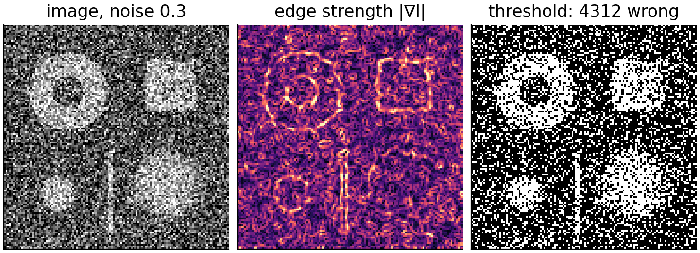
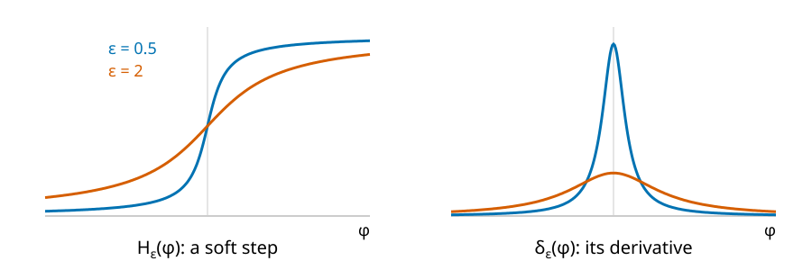
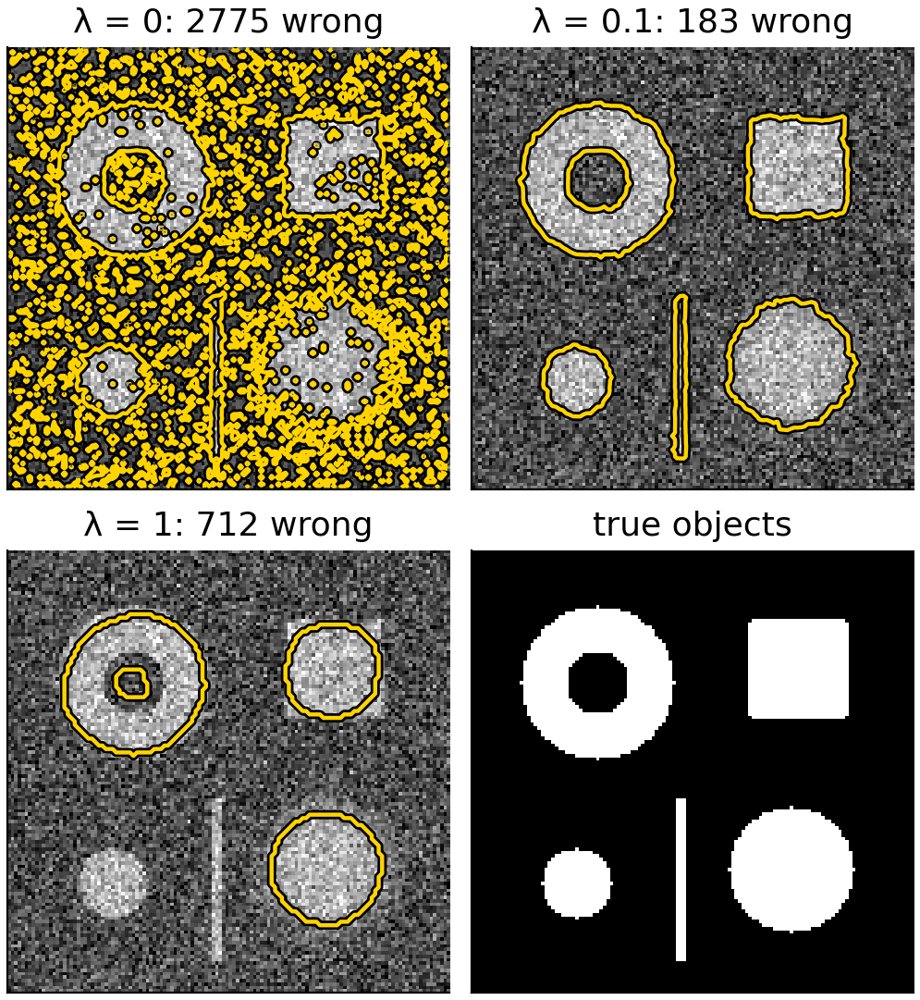
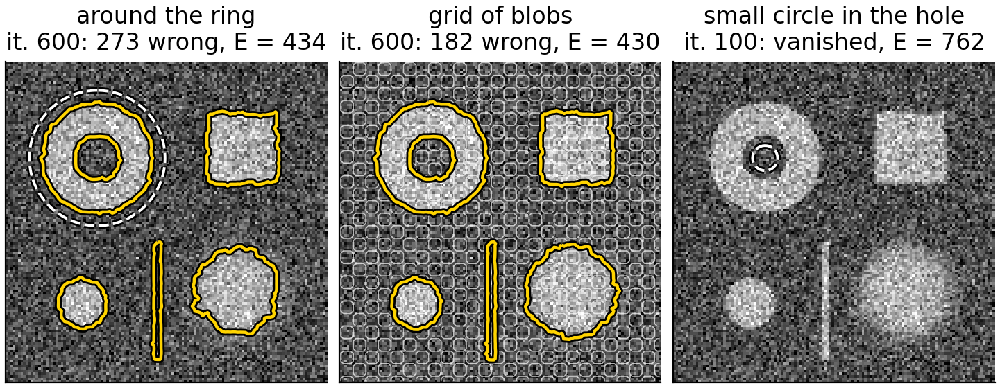
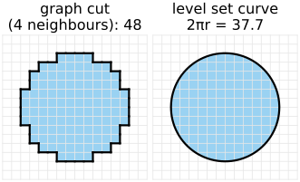

Edge-based contours stop where the image changes locally. In noisy or blurred images there may be no clean edge at all, yet the inside and the outside clearly differ on average. Chan & Vese (2001) move the curve to make both regions as uniform as possible: “active contours without edges”.
The energy: fit one grey level inside, one outside, and keep the boundary short.
8 pixels by hand.
Alternate: means for a fixed curve, then move the curve.
\lambda = 0 is thresholding; large \lambda loses detail.
Holes appear by themselves; local minima and the start.
The same energy as graph cuts, solved differently.
Slides titled The math give the formulas and proofs; the ideas are complete without them.
Noise: the gradient of a noisy image is large everywhere. Smoothing helps, but also blurs the edges we want.
Blur: a soft edge spread over 10 pixels has a small gradient: g hardly drops, the front leaks.
Yet in both cases the mean grey level inside an object differs clearly from the mean outside.
Thresholding (the thresholding day) uses exactly this, pixel by pixel, and gives a speckled result in noise. The graph cuts day added a smoothness term: data + \lambda · boundary. Chan–Vese is that energy for a curve.

The Chan–Vese energy
For a curve C that splits the image into inside and outside, and two grey levels c_1 (inside) and c_2 (outside): E = \sum_{\text{inside}} (I - c_1)^2 + \sum_{\text{outside}} (I - c_2)^2 + \lambda\cdot\text{Length}(C) + \nu\cdot\text{Area}_{\text{inside}}.
The two sums: how badly a two-tone picture (inside c_1, outside c_2) fits the image. Zero only if each region is perfectly uniform.
\lambda\cdotLength: a short, smooth boundary; \lambda is the weight of the prior, as on the graph cuts day.
\nu\cdotArea: an optional push to make the inside smaller (\nu > 0) or larger (\nu < 0); usually 0.
No gradient anywhere: the curve is judged by the regions it creates. (This is the piecewise-constant case of the Mumford–Shah model.)
Moving the boundary by one pixel either way costs a lot: pixel 3 (grey level 2) does not belong with the 6s and 7s, and pixel 7 (grey level 6) does not belong with the 1s.
Alternate: means, then move
Minimise over the curve and the two grey levels, one at a time:
Fix the curve: the best c_1 and c_2 are the means of the image inside and outside (the mean minimises a sum of squared differences).
Fix c_1, c_2: move the curve a little downhill on E. Each pixel near the curve compares its grey level with both means; \phi there changes in proportion to (I - c_1)^2 - (I - c_2)^2 \;+\; \lambda\kappa \;+\; \nu . Negative: \phi decreases, the pixel is closer to c_1 and joins the inside; positive: it leaves. \lambda\kappa keeps the curve short (curvature flow, unit 2).
Repeat until nothing changes.
In the example, a pixel of grey level 4: (4 - 6.5)^2 - (4 - 1.25)^2 = 6.25 - 7.56 = -1.31: it joins the inside.
\int\delta(\phi)|\nabla\phi| is the length of the zero contour (the co-area formula).
For fixed \phi: \partial E/\partial c_1 = -2\int(I - c_1)(1 - H) = 0 gives c_1 = \int I(1 - H)/\int(1 - H), the mean inside; likewise c_2.
The literature writes \mu for the length weight and \lambda_1, \lambda_2 for weights on the two data sums; here \lambda_1 = \lambda_2 = 1 and \lambda is the length weight, as everywhere in this course.
The math: gradient descent on φ
The derivative of E with respect to \phi at a point (Euler–Lagrange; \nabla\cdot(\nabla\phi/|\nabla\phi|) = \kappa): \frac{\delta E}{\delta\phi} = \delta(\phi)\Big[-\lambda_1(I - c_1)^2 + \lambda_2(I - c_2)^2 - \lambda\kappa - \nu\Big]. Gradient descent, \phi_t = -\delta E/\delta\phi: \phi_t = \delta_\varepsilon(\phi)\Big[\lambda\kappa + \nu + \lambda_1(I - c_1)^2 - \lambda_2(I - c_2)^2\Big] (with the convention \phi > 0 inside, used by Chan & Vese, every sign in the bracket flips).
Unequal weights \lambda_1 \ne \lambda_2 shift the decision: with \lambda_1 > \lambda_2 a pixel must be closer to c_1 to join the inside.
Numerically the curvature term is taken implicitly (Chan & Vese’s semi-implicit scheme), so large time steps are stable.
A soft step and its derivative

The sharp step H has a spike for a derivative. In practice both are smoothed with a width \varepsilon: H_\varepsilon (left) and \delta_\varepsilon (right).
The update of each pixel is weighted by \delta_\varepsilon(\phi): pixels near the curve (\phi \approx 0) change fast, pixels far away slowly.
Narrow \delta_\varepsilon: only the curve itself moves, like a front. Wide\delta_\varepsilon: pixels far from the curve can also change sign: new pieces and holes appear where the data want them.
Try it: regions, not edges
λ: from thresholding to smooth shapes
\lambda = 0: no length term. Each pixel joins the side whose mean is closer, i.e. the image is thresholded at (c_1 + c_2)/2, and the means are recomputed: exactly the isodata iteration of the thresholding day. (“\lambda = 0 is thresholding”, as on the graph cuts day.)
Small \lambda: isolated noise pixels cost more boundary than they save in data: they disappear. The boundary follows the objects.
Large \lambda: thin and small objects have much boundary for little area: they are dropped (the shrinking bias of the graph cuts day). Corners are rounded.
In the 8 pixels I = (1, 1, 1, 6, 6, 3, 6, 1): with \lambda = 0 the best split leaves the “3” outside (E = 3.2, four boundary points); for \lambda > 1.775 filling it in (two boundary points, E = 6.75 + 2\lambda) is cheaper.

New pieces, holes, and local minima
With a wide \delta_\varepsilon, a hole inside an object (or a second object) can appear anywhere, far from the start curve. Topology for free, again.
But E is minimised locally: the curve slides downhill from where it starts and stops in the first valley.
A bad start: a small circle in a region of one grey level only. Inside and outside then have nearly the same mean, the data barely push, and the length term shrinks the curve to nothing.
The classic robust start is a grid of small blobs over the whole image: every region is sampled from the beginning, and the two means separate quickly.

Try it: holes and bad starts
Regions or edges?
edge-based (geodesic)
region-based (Chan–Vese)
looks at
local differences, \lvert\nabla I_\sigma\rvert
means of whole regions
noise
needs smoothing; stops on noise or leaks
averages it out
blurred or weak edges
leaks
fine, if the means differ
uneven background, shading
fine (edges are local)
fails: one mean per region
objects of several grey levels
fine
needs more phases
start
near the objects, balloon direction
anywhere; grid of blobs
Both are local minimisers; both give a smooth, sub-pixel curve; both change topology freely.
The same energy as graph cuts
The graph cuts day minimised data + \lambda\cdot(number of neighbouring pairs with different labels). For fixed c_1, c_2 the Chan–Vese energy is the same thing: data (I - c_\ell)^2 per pixel plus \lambda\cdotboundary length.
Graph cuts: labels on a pixel graph; for fixed means the global minimum in one max-flow. Boundaries are measured along the grid (metrication: blocky with 4 neighbours).
Level sets: a continuous curve, sub-pixel, smooth, true Euclidean length; any differentiable energy can be added (shape priors, more terms); but only a local minimum, and the result depends on the start.
Alternating “means, then a graph cut” is also possible: the same model, a different optimiser.

Beyond two grey levels
Pointers, not covered:
Several phases: two level set functions give four regions (inside/outside of each), Vese & Chan’s multiphase model.
Colour or multichannel images: a mean vector per region, squared distances summed over channels.
Shading: allow the grey level to vary smoothly inside a region (piecewise-smooth Mumford–Shah), or fit local means in a window around each pixel.
Shape priors: an extra energy that prefers a known shape, such as the shape models of the snakes day.
Alternate: c_1, c_2 = means inside and outside; then each pixel near the curve moves towards the region whose mean it is closer to, while \lambda\kappa keeps the curve short.
\lambda = 0: thresholding at (c_1 + c_2)/2, the isodata fixed point; large \lambda: smooth, small and thin objects lost.
No gradients: robust to noise and blur; fails when one mean per region does not fit (shading).
A wide \delta_\varepsilon lets holes and new pieces appear; local minima: start from a grid of blobs.
The same energy as graph cuts on the pixel graph: global and discrete there, local and continuous here.